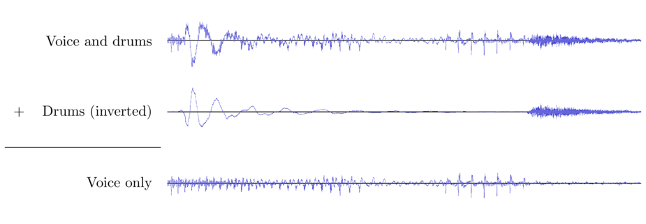

Solution: Destructive Interference
Answer: STADIUM ANTHEM
Written by
Mitchell Lee
You can alternatively read this solution as a pdf.
Solvers are presented with an audio file containing a drum solo made out of samples. At 12 seconds, the sound of a doorbell joins the drums, followed by a voice that says “Welcome! Oh, yeah, the drumming? Those are the neighbors. They always seem to get in the way of what I’m trying to say at the most inconvenient times. Anyway, here’s the answer to this puzzle. The answer to this puzzle is:” as it fades out and reaches what appears to be silence at 27 seconds. At 35 seconds, the same voice says “And that’s the answer! Hope you caught everything I said.” as it fades back in.
As indicated by the voice’s changes in volume and the sentence “People sometimes tell me I need to speak louder” of the flavor text, the voice actually does spell out the complete answer to the puzzle in seconds 27–35, but it’s spoken so quietly that it’s humanly impossible to hear with all the drums playing over it. The trick to the puzzle, as indicated by the sentence “Instead, I wish my neighbors would be silent” of the flavor text, is to remove the drums from the audio somehow. Then we can amplify the very quiet voice to hear the answer.
If we had access to an audio file containing just the drum track and not the voice, then we could use polarity inversion to “subtract” the drums from the provided audio file, leaving only the voice. This operation can be performed in any audio editing application or digital audio workstation. For example, in the free program Audacity, it can be done using Effects → Invert. This technique is based on the physical phenomenon of destructive interference, which is mentioned in the puzzle’s title.

Of course, the issue is that the puzzle doesn’t provide an audio file containing just the drum track and not the voice. So we’re going to make one using sampling.
There are some observations about the provided audio file that we need to make before we begin:
- The drumming is made up of five different sound samples: a crash cymbal, a tom-tom, a snare drum, a hi-hat, and a kick drum.
- The tempo of the drums remains 120 beats per minute throughout the track and the start of each drum sample occurs at an integer multiple of one-eighth of a second.
- Each of the drum samples lasts for exactly one second. We might guess this from the fact that the audio in the first second (0:00 - 0:01) of the file is precisely the same as the audio in the second second (0:01 - 0:02). We can confirm it by looking at the end of the file: all five drum samples play at 38 seconds and there is abrupt silence starting at 39 seconds.
(Here are two technical remarks that mostly don’t affect the process of solving the puzzle but are worth pointing out. First, the audio file provided in the puzzle is in the .wav format. It’s important that we don’t convert it to .mp3 or any other format that uses lossy compression, because doing so would cause us to lose enough precision that we wouldn’t be able to solve the puzzle.
Also, because each drum sample starts at an integer multiple of one-eighth of a second but not all of them start at an integer multiple of one-fourth of a second, we need to work with a sample rate that is an integer multiple of 8 Hz. If we use Audacity to solve this puzzle, we don’t have to worry about this because Audacity automatically sets the working sample rate to 48000 Hz when it opens the provided audio file. But some other audio editing programs set the sample rate by default to the hardware sample rate, which can sometimes take values like 44100 Hz, so be careful.)
In order to recreate the drum track, we must first recreate the five drum samples. We should do so by manipulating the first 12 seconds of the provided file, because they contain only drums and no voice. (It will actually turn out that we only need to use the first 8 seconds.) Here is a transcription of the those first 12 seconds, which we’ll call “audio clip A”. Each drum sample is denoted by a slanted red line segment beginning at a small cross. You can click on this image to listen to audio clip A.
We can isolate a sample of the kick drum by looking at just the first second of audio clip A. We’ll call this “audio clip B”. Here and in the rest of this solution, the name of each audio clip we’ll be using will be written under its transcription.
Using audio clip B and referring to the transcription of audio clip A, we can recreate the kick drum line. We must make sure to align everything precisely, or the next step won’t work. In Audacity, this can be done either by typing precise times into the selection toolbar at the bottom of the window or by using Analyze → Regular Interval Labels to create a “grid” that the drum beats can snap to.

Now, “subtract” audio clip C from audio clip A. That is, invert the polarity of audio clip C (using Audacity’s Invert effect, for example) and then mix the result with audio clip A. What we get is the first 12 seconds of the provided audio with the kick drum removed. Note that this starts with two seconds of silence which aren’t shown in the image below.
If we so desire, we can jump ahead a bit and perform the same kind of “subtraction” operation to remove all instances of the kick drum from the provided audio. This is enough to uncover the spoken letter “S” at time 27 seconds, which confirms that we are on the right track. What we’ve done so far is a small but representative taste of the kind of audio magic that we’ll be using for the rest of the solution.
Let’s isolate the hi-hat sample next. We can get the first half-second of the hi-hat sample by taking seconds 2.25–2.75 of audio clip D, but the hi-hat sample is one full second long, so that isn’t good enough. Instead, let’s examine seconds 2.25–3.25 of audio clip D.
Take seconds 0–0.5 of audio clip E and move them half a second later.
Now, subtract audio clip F from audio clip E to get a sample of the hi-hat.
In the same way that we recreated the kick drum line from audio clip B, we can recreate the hi-hat line from audio clip G.
Then, subtract audio clip H from audio clip D to get the first 12 seconds of the provided audio with both the kick drum and hi-hat removed.
All that’s left is to isolate samples of the cymbal crash, tom-tom, and snare drum. To do this, let’s look at seconds 5–6 of audio clip I. Remember that each drum sample lasts one full second, so the tom that starts at the 4.375 second mark in audio clip I can still be heard at time 5 seconds. The same is true of the snare that starts at the 4.5 second mark. We’ll represent these “residual sounds” in the diagram below using the ends of red line segments.
One interesting property of audio clip J is that it loops seamlessly. For example, here’s what it looks like when looped five times from 5 seconds to 10 seconds.
Now, if we subtract audio clip K from audio clip I, we get a large amount of cancellation.
Seconds 8–9 of audio clip L are the crash cymbal sample.
We can use the same audio clip L to get the tom sample as well. Let’s restrict our attention to seconds 6–8.
Shift audio clip N half a second later to get “audio clip O”. Also, shift it 0.625 seconds (5/8 of a second) later to get “audio clip P”.
Now, subtract both audio clip O and audio clip P from audio clip N. That is, invert the polarity of both audio clip O and audio clip P, and mix the two results with audio clip N. The result is the following “audio clip Q”. Each thin blue line segment in the diagram below represents an inverted tom sample, and the thick blue line segment represents two inverted tom samples playing at the same time.
As a remark, the “right-side-up” (red) tom samples in audio clip Q may sound exactly like the “inverted” (blue) samples, but they are actually inverses of each other. Seconds 0.25–1.25 of audio clip Q are the tom sample we’re looking for.
Just like we did with the kick drum and hi-hat, we can recreate the crash cymbal and tom-tom lines. This time, let’s do both at the same time.
We subtract audio clip S from audio clip I, which results in the snares alone.
Finally, we sample the snare drum by taking seconds 4.5–5.5 of audio clip T.
We now have each of the five drum samples used in the puzzle: they are audio clips B, G, M, R, and U. (Of course, the logical path we took to find these samples is just one possible solution path.) Using this, we can recreate the drum track in 0:27–0:35 of the provided audio file. We don’t actually need to transcribe the drums because it is easier to remove each type of drum one by one. For the sake of completeness, though, the transcription can be seen below.
Subtracting audio clip V from 0:27–0:35 of the provided audio file isolates just the voice in that time interval, which speaks a quiet message. After amplifying it, we can hear the answer: STADIUM ANTHEM.
The shortcut
It turns out that there is a difficult and completely optional “shortcut” in the solution to this puzzle. We expect it to be very rarely used and it is only included here as an interesting alternative method. This shortcut requires some programming and a little bit of linear algebra.
Imagine chopping each of the audio clips A, …, V used in the above solution into 1/8-second pieces. For example, audio clip A is 12 seconds long, so we can chop it up into 96 pieces A1,…,A96, each of which is a 1/8-second audio clip. Audio clip V is 8 seconds long, so we instead chop it up into 64 pieces V1,…,V64, each of which is a 1/8-second audio clip. If we use the sample rate 48000 Hz, which is the sample rate of the audio file provided by the puzzle, then any 1/8-second audio clip is stored on our computer using 6000 samples. Thus, we can think of the clips A1,…,A96,V1,…,V64 as 6000-tuples of numbers, or equivalently vectors in ℝ6000. (If you prefer, you can think of them as elements of the “vector space of 1/8-second audio clips”, where the addition operation is mixing and the scalar multiplication operation is amplification/polarity inversion.)
The key claim underlying this solution method is that each of the vectors V1,…,V64 is in the span of the vectors A1,…,A96.
In order to see why this is the case, we need to recall some details about the audio clips A, …, V. In particular, recall that audio clip A was given to us by the puzzle. From it, we created each of the audio clips B, …, V, in that order, using a sequence of audio operations. Each of the operations we used is of one of the following types:
- Slicing a previously created audio clip at points which are integer multiples of 1/8 second. (For example, audio clip E was created from audio clip D by slicing out seconds 2.25–3.25.)
- Shifting a previously created audio clip back or forward in time by an integer multiple of 1/8 second. (For example, audio clip P was created from audio clip O by moving it 0.375 seconds later.)
- Adding or subtracting previously created audio clips. (For example, audio clip L was created by subtracting audio clip K from audio clip I.)
Now we claim that, because we only used those operations, any of the 1/8-second slices of audio clips B, …, V is in the span of A1,…,A96.
For example, suppose we slice the 1-second audio clip B into eight 1/8-second slices B1,…,B8. Then recall that audio clip B is just the first second of audio clip A, so actually Bi = Ai for i = 1,…,8. In particular B1,…,B8 are all in the span of A1,…,A96.
Now, let’s look at the 12-second audio clip C, which was created by mixing 16 copies of audio clip B that had been shifted to various points in time. It can be broken up into 96 pieces C1,…,C96 of 1/8 second each, and each of those pieces is the span of B1,…,B8. For example, the piece C24, which is seconds 2.875–3 of audio clip C, is equal to B3 + B7. That is, it’s just seconds 0.375–0.5 of audio clip B mixed with seconds 0.875–1 of audio clip B. And each of the pieces Bi is in the span of A1,…,A96, so each of the pieces Ci must be as well.
Moving on to audio clip D, it was formed by subtracting audio clip C from audio clip A. So its 1/8-second pieces D1,…,D96 are given by Di = Ai - Ci for i = 1,…,96. Recall that each Ci is in the span of A1,…,A96, so each Di must be in that span as well.
Continuing along these lines and using the fact that each of the audio clips B, …, V was created using only the three operations listed above, we ultimately come to the conclusion that the vectors V1,…,V64 are all in the span of A1,…,A96. In fact, if we were to carefully examine the above argument, we could even write each of V1,…,V64 explicitly as a linear combination of A1,…,A96. However, it turns out that we don’t need to do that. Instead, we can simply use the provided audio file to approximate the vectors V1,…,V64, and hence audio clip V, well enough to complete the solution. Here’s how this works.
Let’s call seconds 27–35 of the audio file provided by the puzzle “audio clip V′”, and chop it into its 1/8-second fragments V1′,…,V64′. Remember that audio clip V′ is made up of two parts: a drum solo (which is just audio clip V) and a quiet spoken message (which is audio clip V′ minus audio clip V). We are interested in separating these two parts from each other without computing audio clip V directly. We can do this an eighth of a second at a time: for i = 1,…,96, we want to separate Vi′ into Vi and Vi′- Vi.
Recall that the vector Vi′-Vi is a fragment of a speech recording. Two sounds generated by independent means tend to correlate weakly with each other, so Vi′- Vi should correlate weakly with each of A1,…,A96. In other words, the dot product (Vi′- Vi) ⋅ Aj should be small in magnitude for j = 1,…,96. Thus, in the decomposition Vi′ = Vi + (Vi′-Vi), the vector Vi is in the span of A1,…,A96 whereas the vector Vi′-Vi is nearly orthogonal to that span.
On the other hand, there’s a unique way to write Vi′ as a sum (Vi′)∥ + (Vi′)⊥ where (Vi′)∥ is in the span of A1,…,A96 and (Vi′)⊥ is exactly orthogonal to that span. It turns out, as expected, that Vi is approximately (Vi′)∥ and Vi′- Vi is approximately (Vi′)⊥. (Roughly speaking, this is because the vector Vi - (Vi′)∥ = (Vi′)⊥- (Vi′-Vi) is both in the span of A1,…,A96 and nearly orthogonal to that span, so it must be small.) So if we want to approximately separate Vi′ into Vi and Vi′- Vi, it’s enough to compute (Vi′)∥ and (Vi′)⊥.
The problem of finding (Vi′)∥ and (Vi′)⊥ is an example of a least squares problem. In more detail, let
be the matrix whose columns are the vectors A1,…,A96. This is a 6000 × 96 matrix with real entries. Then (Vi′)∥ is exactly equal to Ax, where x is a vector minimizing the Euclidean norm ∥Ax - Vi′∥2.
Performing this minimization for i = 1,…,64 allows us to stitch together a very good approximation of audio clip V, and thus a good approximation of the quiet spoken message in seconds 27–35 of the provided audio. Here is a Python 3 program that does this using the scipy and numpy libraries. The comments in this program refer to the vectors Ai and Vi and V ′i in zero-indexed notation. Because the matrix A is very ill-conditioned (in fact, it does not even have full rank), we use scipy.sparse.linalg.lsmr with a maximum iteration count of 106.
from scipy.io.wavfile import write
from scipy.sparse.linalg import lsmr
import numpy as np
data = read("destructive-interference.wav")
samples = list(data[1]) # A list of the samples in destructive-interference.wav
At = np.array([samples[i*6000:(i+1)*6000] for i in range(96)])
A = At.transpose() # The matrix A (whose columns are A_0, ..., A_95)
answer = [] # A list of the samples of the spoken message
for i in range(64):
vprime = np.array(samples[27*48000 + i*6000 : 27*48000 + (i+1)*6000]) # V’_i
x = (lsmr(A, vprime, maxiter=1e+6))[0] # vector x that minimizes |Ax - V’_i|_2
vapprox = A @ x # approximation Ax for V_i
answer.extend(list(vprime - vapprox))
write("answer.wav", 48000, np.array(answer,dtype=np.int16))
After amplifying the output of this program, we can hear the answer: STADIUM ANTHEM.